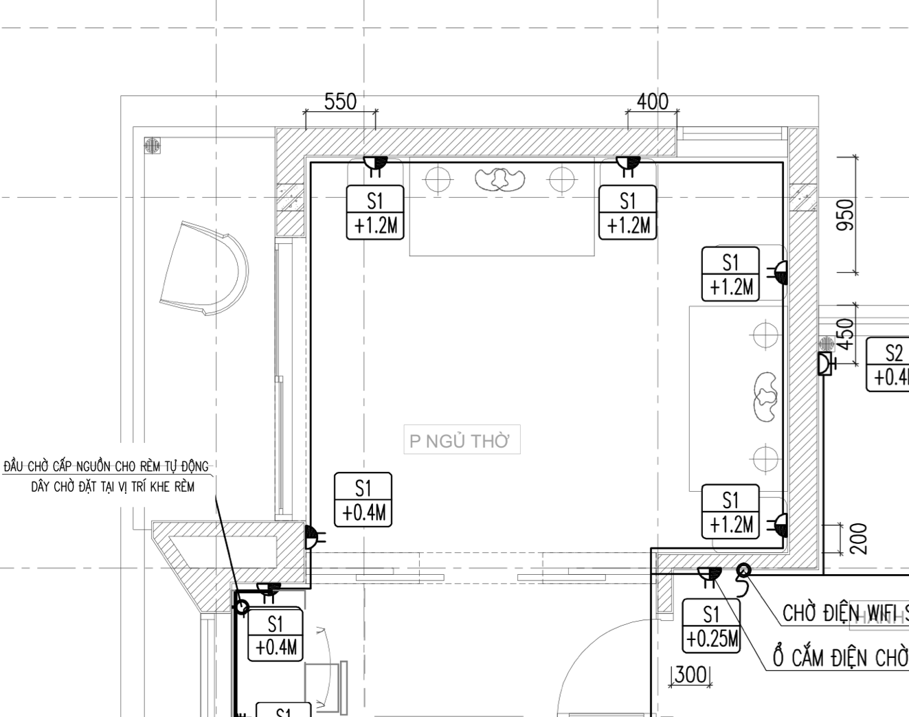
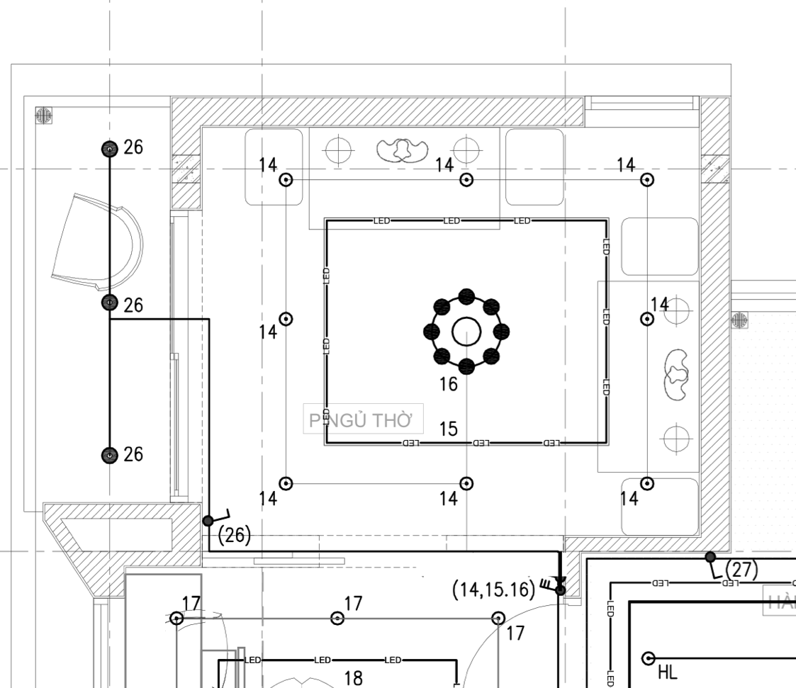

🏺 BẢN CHỐT HOA VĂN & ĐÔI LỘC BÌNH ĐẠI BÁT TRÀNG • DẠ ĐỤC THỦNG TRIỆN VUÔNG 90° + MẶT ĐỒNG VUÔNG 140×140 • LỘC BÌNH MEN RẠN ĐẮP NỔI 1M67 (THÊM ĐỨC)
Phòng Thờ Tầng 3 Q Villa — Ban Tam Cấp Dạ Triện Vuông Mặt Đồng (1.070 → 1.200 → 1.350 mm), Đôi Lộc Bình Đại Gốm Sứ Bát Tràng Men Rạn Đắp Nổi 1.670 mm & 04 Vách Hậu Không Tranh Khớp 100% Đèn – Ổ Cắm
Phát triển trực tiếp từ mẫu họa tiết dạ bàn gia chủ ưng ý nhất (dạ đục thủng 04 + 04 ô xoắn Triện Hồi Văn vuông góc 90° lọt sáng + Mặt Đồng Vàng Cổ Xước Mờ Hình Vuông 140×140 mm dập nổi chữ Thọ + 4 chân đứng vát gót hài gầm thoáng 820 mm), kết hợp Đôi Lộc Bình Đại Gốm Sứ Bát Tràng Men Rạn Ngà Cổ Đắp Nổi Kênh Bong (cỡ 1m50 + kỷ gỗ tròn thấp 17 cm = tổng cao 1.670 mm cung THÊM ĐỨC, miệng loe phễu để trống tụ lộc, đặt tại tâm Y = 310 & Y = 2.900 mm) và 04 phương án trang trí vách hậu 2.450 mm (0% tranh vẽ, 0% hoành phi câu đối) khớp chuẩn từng milimet với 03 đèn rọi trần Φ75, dây chờ +2.050 mm và 05/05 ổ cắm S1 + công tắc Aqara H1.
Họa Tiết Dạ Bàn Gia Chủ Chốt ⭐
Triện 90° + Đồng Vuông
4+4 ô triện vuông góc đục thủng lọt sáng + Mặt đồng vuông 140×140 + Chân gót hài • Rõ 3 cấp 1.070 / 1.200 / 1.350
Đôi Lộc Bình Đại Bát Tràng (1m67)
THÊM ĐỨC • Kỷ Tròn 17cm
Men rạn ngà đắp nổi Liên Hoa Phú Quý • Bụng Ø446 vừa khoang 620 • Eo cổ tại +1.2m thắt Ø184 lộ thoáng S1 #1!
S1 #1 (+1.2m) đúng tầm eo thắt cổ bình Ø184 lộ thiên • S1 #2 (Y=950) nắp nam châm 160×160 • Giấu nguồn +2.05m
🪚 TRỌN BỘ 06 ẢNH STUDIO + 02 BẢN VẼ 6K (6000 × 4200 PX) GỬI THỢ MỘC • BÀN THỜ TAM CẤP & SẬP QUỲ “BẢN CHỐT LAI 2”
06 Ảnh Studio Đủ 3 Góc (Chính Diện 0° • Góc Nghiêng 3/4 • Tách Rời 2 Món) Cho Cả 2 Kiểu Bậc: Tam Cấp Giật Bậc & Tam Cấp Bằng Nhau
Tách nền Studio sáng rõ từng đường chỉ mộc, giữ nguyên 100% tông màu Nâu Sô-cô-la / Hạt Dẻ Trầm (0% ánh đỏ — đóng bằng Gỗ Gụ Lào Lên Nước Nâu Cổ hoặc Gỗ Óc Chó Bắc Mỹ FAS) để bạn gửi trọn bộ 06 ảnh + bản vẽ kỹ thuật 6000 × 4200 px cho xưởng mộc báo giá & đối chiếu trực tiếp.
🅰️ BỘ 1 (ẢNH 01 – 03): PHƯƠNG ÁN TAM CẤP THU BẬC HÌNH THÁP (1.970 → 1.650 → 1.270 mm — Chuẩn Bản Chốt Lai 2 Gốc)
Ảnh 01 • Chính Diện 0° Tách Riêng 2 Món (Tam Cấp Thu Bậc)
Khóa 100% Cung Đỏ Lỗ Ban 38,8 cm cho bản Tam Cấp Bằng Nhau (cả 3 bậc dài kịch 1.970 mm).
🔌 ĐỐI CHIẾU PHƯƠNG ÁN GỖ GỤ LÀO 100% KHÔNG ĐỤNG / KHÔNG CHE Ổ CẮM & BẢN TRƠN KHÔNG VÁCH PHÍA SAU
03 Phương Án Gọn Nhẹ Nhất Bằng Gỗ Gụ Lào Giả Cổ: Vách Khung Vòm Lọt Giữa Không Che Ổ Cắm (PA A) & Bản Trơn Không Vách Phía Sau (PA B1 • PA B2) — Tiết Kiệm Ngay 45 – 80 Triệu VNĐ!
Nếu gia đình không muốn khoét vách gỗ hay nối dài đế âm điện, giải pháp cực kỳ thông minh là bỏ toàn bộ phần ốp gỗ ở 2 khoang Lộc Bình và 2 bức tường bên — giữ nguyên mặt tường trát phẳng sơn kem ấm dễ lau chùi (nhờ đó 100% ổ cắm & công tắc hiện trạng lộ thiên nguyên bản trên tường xây, 0% bị che!), và chỉ chọn 1 trong 3 cấp độ tối giản dưới đây:
① Phương Án A ⭐ (Khuyên Chọn Cân Bằng Nhất): Chỉ Dựng Khung Vòm Gỗ Gụ Độc Lập Giữa Tường (1.970 mm) — 0% Che Ổ Cắm & Công Tắc!
Vẫn giữ được “Khám Vòm Tôn Nghiêm” mà 0% đụng tới ổ điện: Khung vòm Gỗ Gụ rộng `1,97m` rỗng lòng ôm đúng Bàn Tam Cấp; hai bên tường để phẳng sơn kem giúp ổ cắm cạnh cổ Lộc Bình phải & công tắc cạnh cửa lùa lộ thiên 100% trên tường xây, phòng thoáng sáng hơn hẳn và tiết kiệm ngay ~55 triệu VNĐ!
② Phương Án B1 (Bản Trơn 100% Không Có Vách Phía Sau): Tường Sơn Kem Tinh Khiết Phô Diễn Bàn Tam Cấp, Sập Gụ & Đôi Lộc Bình
Hình ảnh thực tế khi bỏ 100% vách phía sau: Căn phòng `12,1 m²` lập tức nhìn rộng rãi, thanh tịnh và nhẹ nhàng tối đa; tự thân bộ ba Bàn Tam Cấp Gỗ Gụ + Sập Gụ Chân Quỳ + Đôi Lộc Bình 1m67 đã đủ bề thế như tác phẩm điêu khắc trên nền tường kem ấm, tiết kiệm ~75–80 triệu VNĐ!
③ Phương Án B2 (Không Vách Gỗ + Tận Dụng Luôn Đầu Dây Chờ +2.05m): Gắn 01 Đĩa Đèn Hắt Tường Phẳng Trơn & Quạt Trần Gỗ Gụ
Mẹo cực hay nếu bạn chọn không làm vách gỗ: Vì tường gạch hiện trạng đã chôn sẵn đầu dây chờ đèn ở cao độ +2.05m, chỉ cần gắn 01 Đĩa đèn hắt tường phẳng trơn (~3 triệu VNĐ) ngay tại đầu dây đó là buổi tối có vầng sáng ấm tụ khí sau Đỉnh đồng mà không tốn 75 triệu tiền vách gỗ!
📐 Bảng So Sánh 04 Cấp Độ Đầu Tư (Full Vách vs. Khung Vòm Độc Lập vs. Bản Trơn Không Vách • 4800 × 2960 px • 144 DPI)
Lưu ý sơn tường nếu chọn `PA A`, `PA B1` hoặc `PA B2`: Hãy dặn đội sơn dùng dòng sơn nội thất bóng mờ lau chùi hiệu quả (Dulux EasyClean / Jotun Majestic Đẹp & Chăm Sóc Hoàn Hảo tông Kem Ngà Ấm) để sau nhiều năm thắp hương chỉ cần lau nhẹ là tường sạch mới.
🏆 BẢN CHỐT KẾT HỢP HOÀN HẢO NHẤT (GỖ HƯƠNG ĐÁ TỰ NHIÊN) • “TRỜI TRÒN ĐẤT VUÔNG” VỪA UY NGHI VỪA SẠCH BỤI TRÊN CAO
Tổ Hợp Chốt: Vách Khám Vòm Bo Cong Trơn Mịn Của WOW 4C + Bàn Thờ Tam Cấp Đục Triện Mặt Đồng & Sập Chân Quỳ Của Bản WOW 4 Gốc
Sự kết hợp đắt giá nhất giải quyết trọn vẹn cả thẩm mỹ truyền đời cho người lớn tuổi lẫn công năng lau dọn thực tế: ở trên cao sát trần (+2,4m → +3,0m — nơi khó bắc thang nhất) dùng vòm gỗ Hương Đá uốn cong liền khối trơn láng 100% của WOW 4C (không một kẽ lá bám bồ hóng!); còn ở tầm thấp ngang ngực (+0,47m → +1,35m — đứng dưới sàn lau nhẹ nhàng) giữ trọn chiếc Bàn Tam Cấp đục Triện Hồi Văn Mặt Đồng cổ bậc Ô Sa và Sập Chân Quỳ chạm mây nông tinh xảo của WOW 4 Gốc!
Thế “Trời Tròn – Đất Vuông” viên mãn tuyệt đối: Đường cong của vòm khám & đĩa hào quang phẳng WOW 4C phía trên đối đáp nhịp nhàng với nét kỷ hà vuông vắn của dạ Triện Bàn Tam Cấp ở giữa và đường uốn mềm của chân quỳ Sập WOW 4 Gốc phía dưới; đi cùng quạt trần 5 cánh gỗ phẳng láng mát dịu mùa hè.
② Bản Chốt Lai 2 ⭐ (Lòng Vòm Hắt Viền Sáng Tinh Khiết Không Đĩa Tròn & Đèn Ốp Trần Mỏng): Vách Cong WOW 4C + Bàn & Sập WOW 4 Gốc
Màu thật nguyên bản của Gỗ Gụ Lào khi mới đóng xong (chỉ phủ PU trong mờ): Sắc Nâu Vàng Mật Ong Sáng Ấm ăn nhập tuyệt vời với sàn gỗ xương cá, thớ gỗ Gụ thẳng tắp mịn như lụa giúp phòng thờ `12,1 m²` sáng thoáng, dùng 5–7 năm gỗ tự oxy hóa đằm dần cực đẹp.
② Gỗ Gụ Lào ⭐ — Màu Thực Tế Số 2 (Màu Sập Gụ Giả Cổ • Nâu Hạt Dẻ Nước Chè Đặc): Khuyên Chọn Chuẩn Nếp Bắc Bộ & Sẵn Gỗ Nhất!
Màu “Sập Gụ Giả Cổ” kinh điển nhất của Gỗ Gụ Lào (tiệp `98%` độ trầm bạn thích mà ấm hơn Óc Chó): Thợ quét nước vôi/chè đặc hoặc lau lót `Chestnut Brown` loãng (`0%` pha đỏ) lên cốt vàng nâu của Gỗ Gụ tạo ra màu Nâu Hạt Dẻ Già trong vắt, vừa sẵn phôi hộp lớn nguyên khối tại mọi xưởng miền Bắc vừa bền trăm năm!
📐 Cẩm Nang Nghiệm Thu Mộc Trần & 02 Công Thức Lên Màu Gỗ Gụ Lào Thực Tế (4800 × 2800 px • Retina 144 DPI)
Lưu ý quan trọng nhất khi ký hợp đồng mộc Gỗ Gụ: Ghi rõ “100% Gỗ Gụ Lào sấy khô không rác, không pha Gụ Nam Phi, gia chủ ký nghiệm thu mộc trần trước khi lót sơn” — khi đó bạn chọn Màu Số 1 (Mật Ong Sáng) hay Màu Số 2 (Nâu Hạt Dẻ Giả Cổ) thợ đều phun mẫu 1 tấm ván lẻ cho bạn duyệt trực tiếp tại xưởng!
🏆 Bản Chốt Lai 2 — Tông Màu Nâu Sô-cô-la / Hạt Dẻ Trầm (0% Ánh Đỏ • Đóng Bằng Gỗ Gụ Lào Lên Nước Nâu Cổ Hoặc Gỗ Óc Chó Bắc Mỹ FAS)
Đúng `100%` sắc nâu trầm sang trọng bạn ưng mắt: Thay vì ép nhuộm tối Gỗ Hương Đá (dễ che vân & lộ cốt đỏ khi xước), chọn Gỗ Gụ Lào tự nhiên lau màu Gụ Chín Nâu Giả Cổ (chân Sập nguyên khối, đục Triện cực nét) hoặc Gỗ Óc Chó Bắc Mỹ FAS phủ PU trong mờ sẽ ra đúng màu nâu trầm này tự nhiên, trong vắt từ ngoài vào lõi!
📐 Bảng Đối Chiếu Phôi Gỗ & Công Thức Sơn Thực Tế (4800 × 2840 px • Retina 144 DPI): Hương Đá vs. Óc Chó Bắc Mỹ vs. Gụ Lào
Lời khuyên thực chiến khi đặt xưởng mộc: Nếu ưu tiên 4 chân Sập quỳ `140×140` tiện nguyên khối nặng trịch & hợp ý các cụ → chốt Gỗ Gụ Lào lau màu Nâu Hạt Dẻ Giả Cổ (`0%` pha đỏ); nếu ưu tiên màu nâu sô-cô-la tự nhiên `100%` không pha 1 giọt màu stain → chốt Gỗ Óc Chó Bắc Mỹ FAS!
📐 Bản Vẽ Giao Xưởng Đóng Mộc 1:1 Cho Tổ Hợp Chốt (4800 × 2960 px • Retina 144 DPI): Vách Vòm Cong R=380mm + Ban Tam Cấp & Sập WOW 4 Gốc
Tổng kết ưu điểm vượt trội của Bản Chốt Lai Ghép: Trên cao +2,7m trơn láng 100% không cần bắc thang lau bụi; ở dưới thấp vừa tầm tay giữ nguyên được toàn bộ hồn cốt chạm khắc Triện Hồi Văn – Ô Sa – Chân Quỳ Dạ Cá sang trọng của WOW 4 Gốc trên nền Gỗ Hương Đá tự nhiên phun PU mờ 15%!
⚡ Phối Cảnh Góc Chéo Thực Tế Bản Chốt Lai 2: Cách Khoét CNC & Lắp Mặt Công Tắc / Ổ Cắm Màu Đồng Xước Phẳng Khít Trên Vách Gỗ Hương Đá
Tuyệt đối không bị mất ổ cắm và không lộ nhựa trắng thô kệch: Các vị trí cần thao tác tay hàng ngày (cụm 2 đế âm cạnh cửa lùa & ổ cắm cạnh eo cổ Lộc Bình phải) được soi CNC + nối vành chống cháy + lắp mặt màu Đồng Xước Trầm tiệp màu Gỗ Hương Đá; riêng ổ đèn thờ S1 #2 (Y=950) nằm khuất gọn trong hốc nắp nam châm ngay sau lưng bậc Cấp 3!
📐 Bản Vẽ Chi Tiết Khoét Vách Gỗ & Vành Nối Đế Âm Chống Cháy PCCC (4800 × 3040 px • Retina 144 DPI) Giao Thợ Điện – Thợ Mộc
Lưu ý an toàn PCCC bắt buộc dặn thợ điện: Khi đưa ổ cắm / công tắc từ tường gạch ra mặt ngoài vách gỗ (dày 40–50 mm), bắt buộc lắp “Vành nối dài đế âm nhựa chống cháy” (Box Extender) ôm kín từ đế âm cũ ra sát mặt gỗ — tuyệt đối không để hở dây điện trần chạm vào xương gỗ phía sau!
✨ PHƯƠNG ÁN CHỐT CHO GIA ĐÌNH & NGƯỜI LỚN TUỔI • GỖ HƯƠNG ĐÁ TỰ NHIÊN (WOW 4) TINH GIẢN HOA VĂN GIẢM 90% BÁM BỤI
Tinh Chỉnh Phương Án WOW 4 — Gỗ Hương Đá Tự Nhiên: Giữ Trọn Thế “Khám Thờ 3 Gian Bề Thế” Các Cụ Ưng Ý Nhất, Thay Hoa Văn Nhỏ Bằng Mảng Phẳng & Khe Rộng Lau Sạch Trong 3 Phút!
Để khắc phục nhược điểm bám bồ hóng khói nhang & khó lau chùi trước Tết của dải diềm lá sen xoắn nhỏ li ti trên cao (+2,7m), toàn bộ kết cấu Khám Thờ 3 Gian 4 Cột Trụ Gỗ Hương Đá được cải tiến qua 06 thay đổi đóng mộc thông minh và cụ thể hóa thành 03 phiên bản tinh giản (WOW 4A, WOW 4B, WOW 4C) dưới đây — vẫn giữ nguyên thần thái ấm cúng, gia phong truyền đời nhưng không còn ngóc ngách đọng bụi!
KHE ≥ 5CM
① Bỏ Lá Sen Nhỏ Trên Đỉnh Khám (+2,7m)
Thay dây lá sen xoắn nhỏ & lưới Ô Sa dày bằng Ô kỷ hà thanh lớn khe rộng 5–8 cm (4A), hoặc Pano Hương Đá phẳng kín chỉ đồng (4B), hoặc Vòm bo tròn liền khối (4C).
PHẲNG 100%
② Cột Trụ Phẳng, Sập Dạ Trơn & Đế Kỷ Tiện Tròn
Bỏ các đường soi rãnh nhỏ trên 4 cột trụ; Sập chân quỳ & cổ bậc 3 cấp làm phẳng trơn khoe vân Hương Đá; 2 đế kỷ Lộc Bình tiện tròn đặc không đục lỗ giúp lau sàn cực nhanh.
CHỐNG Ố
③ Vách Đá Mài Mịn & Cánh Quạt Phẳng Nguyên Tấm
Lòng vách sau bát hương ốp đá kem mài phẳng mịn chống ố khói; cánh quạt trần đổi từ cánh lá khắc gân sang cánh Gỗ Hương Đá phẳng láng nguyên khối (hoặc đèn ốp trần kín bụi).
① WOW 4A ⭐ (Khuyên Chọn Số 1 — Cân Bằng Nhất): Khám 3 Gian “Ô Kỷ Hà Thanh Lớn Khe Rộng” + Dạ Triện Thưa & Quạt Trần Cánh Phẳng
Giữ trọn nét truyền thống các cụ yêu thích mà lau dọn nhẹ tênh: Thay hoàn toàn lá sen xoắn nhỏ bằng khung kỷ hà thanh lớn vuông vắn khe hở 5–8 cm ôm tấm pano Hương Đá phẳng chính tâm; dạ bàn chỉ giữ 2+2 đường triện lớn, Sập chân quỳ trơn, kỷ tròn tiện đặc và quạt trần 5 cánh gỗ phẳng mịn không gân lá!
② WOW 4B (Kín Bụi Tuyệt Đối 100% — Không Cần Bắc Thang Quanh Năm): Khám 3 Gian “Pano Phẳng Chỉ Đồng Kín” + Dạ Bàn Liền & Đèn Ốp Trần
Giải pháp “Zero-Dust” nhàn nhất cho gia đình bận rộn: Cả trán khám trên cao lẫn dạ bàn thờ đều làm Pano Gỗ Hương Đá phẳng kín 100% điểm xuyết chỉ đồng mảnh & Mặt Đồng Vuông âm phẳng — phô diễn trọn vẹn vân gỗ quý, đi cùng Đèn ốp trần hộp kín giúp lau toàn bộ phòng thờ trong đúng 2 phút!
③ WOW 4C (Phúc Hậu & Viên Mãn Hợp Ý Các Cụ): Khám 3 Gian “Vòm Cung Bo Tròn Liền Khối Trơn Mịn” + Đĩa Hào Quang Phẳng
Thế “Trời Tròn Đất Vuông” phúc hậu mà 0% góc chết đọng bụi: Sử dụng cột tròn tiện trơn & vòm gỗ Hương Đá bo cong liền khối kết hợp dạ bàn lượn cánh cung phẳng mịn — giữ trọn sự mềm mại Á Đông truyền thống thay cho hoa văn đục thủng mà khăn lau lướt trơn tuột từ trên xuống dưới!
📐 Bản Vẽ Chỉ Dẫn Xưởng Mộc (4800 × 3040 px • Retina 144 DPI): 06 Thay Đổi Kỹ Thuật Giảm 90% Bám Bụi Cho Gỗ Hương Đá
Mẹo kỹ thuật đắt giá dặn thợ mộc: Yêu cầu làm “mộng vát trôi bụi 30°” ở cạnh dưới các ô pano vách, lắp âm phẳng mặt (flush-inlaid) tấm đồng chữ Thọ không nhô gờ, và bả lót kín ghim gỗ + phun PU mờ chống tĩnh điện 15–20% để tàn hương không bám bết vào bề mặt Gỗ Hương Đá!
👑 TUYỆT TÁC PHÒNG THỜ BIỆT THỰ “WOW” GỖ TỰ NHIÊN QUÝ • KHÁM THỜ KIẾN TRÚC TOÀN MẢNG TƯỜNG 3.210 MM CÂN ĐỐI ĐỐI XỨNG 100%
04 Phương Án Phòng Thờ Đẳng Cấp “WOW” Bằng Gỗ Tự Nhiên Quý (Gỗ Gụ Lào • Gỗ Gõ Đỏ Pachy • Gỗ Óc Chó Bắc Mỹ FAS • Gỗ Hương Đá) — Cân Đối Chính Tâm & Chuẩn Trần Thạch Cao KT-4.08
Khắc phục triệt để hạn chế của bản nháp lệch phải trước đó: thay vì để mảng tường sơn trắng trống trải mất cân đối, toàn bộ bức tường chính 3.210 mm được thiết kế thành Hệ Khám Thờ Kiến Trúc Gỗ Tự Nhiên Quý 3 Gian Kịch Trần (620 – 1.970 – 620 mm) đối xứng gương 100%. Nhờ ô cửa sổ S5 (900 mm) ngoài công trường đã xây bịt kín và góc phải có sẵn tường cánh gà 900 mm trước hệ cửa lùa, bố cục cân đối chính tâm này vừa giữ nguyên 100%ô trần thạch cao trắng C1 (+3.150 mm) & tâm đèn/quạt L16 đúng KT-4.08, vừa vẫn chừa thoáng trọn mảng tường Bắc 1.530 × sâu 610 mm (hở 770 mm tới Lộc Bình Tả!) để sau này lắp thêm Ban Thờ Phật bất cứ lúc nào!
3.210 MM
① Ốp Khám Gỗ Tự Nhiên Trọn Tường 3,21m (0% Lệch Góc)
Thiết kế 3 gian đối xứng (620 + 1.970 + 620 mm) nối liền sang lam/pano tường bên và hệ cửa lùa Trục B tạo hiệu ứng “WOW” bề thế ngay từ cửa Logia D9; dây điện +2.05m đi âm sau xương gỗ 35 mm về đúng chính tâm (0% đục tường).
HỞ 770MM
② Giữ Nguyên Trần KT-4.08 & Vẫn Chừa Chuẩn Chỗ Ban Phật
Ô trần thạch cao trắng C1 (+3.150) giữ 100% chính tâm phòng; vùng tường Bắc X = 920 → 2.450 (sâu 610 mm) cách Lộc Bình Tả tới 770 mm vì ô cửa S5 cũ đã xây bịt — sau này đặt thêm Ban Phật hoàn toàn thông thoáng!
PU MỜ 15%
③ Bí Quyết Sơn PU Mờ Giữ Tom & Tâm Đá/Tơ Sáng Ấm 2700K
Gỗ tự nhiên quý hoàn thiện PU mờ 15–20% giữ nguyên vân & tom gỗ (tránh sơn bóng kính đỏ cam), kết hợp tâm vách đá ngọc / đá Travertine / tơ khoáng sáng ấm giúp Bộ Đỉnh Hạc Đồng nổi bật rực rỡ!
① Phương Án WOW 1 ⭐ (Gỗ Gụ Lào Tự Nhiên): Khám Thờ Gỗ Gụ Mật Ong Trầm + Đá Ngọc Alabaster Xuyên Sáng Dịu & Quạt Trần Cánh Gỗ Gụ
Chuẩn mực “Sập Gụ – Án Gian” tinh hoa Bắc Bộ nâng tầm biệt thự 6 sao:Gỗ Gụ Lào tự nhiên Nhóm I lên nước nâu mật ong trầm mịn như lụa, càng dùng lâu càng bóng trầm cổ kính; khoang giữa ốp Đá Ngọc Alabaster / Onyx vàng kem xuyên sáng dịu 2700K tạo vầng hào quang tự nhiên cực kỳ “WOW” phía sau Bộ Đỉnh Hạc Đồng, đồng bộ lam chân tường trái & quạt trần cánh Gỗ Gụ.
② Phương Án WOW 2 ⭐ (Gỗ Gõ Đỏ Pachy Tự Nhiên): Khám Diềm Triện Kép Vân Núi Hoàng Gia + Hào Quang Tròn & Đèn Ốp Trần Gỗ Gõ Đỏ
Gợi ý đắt giá nếu toàn bộ biệt thự Q Villa theo ngôn ngữ Luxury Đương Đại:Gỗ Óc Chó Bắc Mỹ (FAS Black Walnut) sắc nâu sô-cô-la vân cuộn sóng kết hợp hai cánh vách nan uốn cong thế “Tụ Khí Minh Đường” và đá Travertine kem lồng chỉ đồng mang lại vẻ tĩnh tại, xa hoa như khách sạn nghỉ dưỡng Aman mà không hề nặng nề.
④ Phương Án WOW 4 (Gợi Ý Thêm — Gỗ Hương Đá Tự Nhiên): Khám Thờ 3 Gian Diềm Cửa Võng Sen Ô Sa Cách Tân & Quạt Trần Cánh Lá Gỗ Hương
Đẳng cấp “Gia Từ Truyền Đời” cho gia chủ yêu nét chạm trổ truyền thống tinh tuyển:Gỗ Hương Đá tự nhiên mịn đanh như ngọc, thoảng hương thơm tự nhiên nhẹ nhàng; hệ Khám Thờ 3 Gian có diềm cửa võng chạm Sen – Ô Sa cách tân (0% chữ Hán, 0% sơn son thếp vàng) tạo chiều sâu uy nghi bậc nhất dưới nền trần thạch cao trắng + quạt trần cánh lá gỗ.
📐 Bản Vẽ Kiến Trúc Khám Thờ Toàn Diện 3.210 mm & Bảng So Sánh Chọn 04 Loại Gỗ Tự Nhiên Quý (4800 × 3040 px • Retina 144 DPI)
Lời khuyên chọn gỗ tự nhiên tối ưu nhất cho Phòng Thờ Tầng 3 Q Villa: Nếu bạn thích vân gỗ rực rỡ bắt sáng “WOW” ngay lập tức và độ lì chống nứt co ngót tầng áp mái tuyệt đối → chọn WOW 2 — Gỗ Gõ Đỏ Pachy / Lào; nếu yêu sắc nâu mật ong trầm cổ điển Bắc Bộ kết hợp vách đá ngọc Alabaster phát sáng dịu → chọn WOW 1 — Gỗ Gụ Lào; nếu muốn đồng bộ nội thất biệt thự hiện đại 6 sao → chọn WOW 3 — Gỗ Óc Chó Bắc Mỹ FAS; còn nếu muốn chất nhà thờ đại gia truyền đời có diềm khám chạm Sen – Ô Sa → chọn WOW 4 — Gỗ Hương Đá!
PHẦN 1 (MỚI CHỐT THEO MẪU LỘC BÌNH ĐẠI BÁT TRÀNG) • DẠ TRIỆN VUÔNG MẶT ĐỒNG + ĐÔI LỘC BÌNH MEN RẠN ĐẮP NỔI 1M67 & 04 VÁCH HẬU M&E
04 Phương Án Vách Hậu Không Tranh Đi Cùng Mẫu Dạ Bàn Triện Vuông Mặt Đồng & Đôi Lộc Bình Đại Gốm Sứ Bát Tràng Men Rạn Đắp Nổi 1.670 mm (THÊM ĐỨC)
Cả 04 phương án (PA 16-BT1 → PA 16-BT4) đều đã cập nhật đồng bộ sang trần thạch cao phẳng sơn trắng giật cấp C1 (+3.000 / +3.150 mm) chuẩn thiết kế gốc, phối hợp trực quan cả hai lựa chọn thiết bị tâm trần L16: Đèn ốp trần mỏng sát trần (BT1, BT3) và Quạt trần cánh gỗ tự nhiên kèm đèn LED ấm 3000K (BT2, BT4), đi cùng Ban Tam Cấp đục thủng Triện Vuông 90° + Mặt Đồng Vuông 140×140 mm, Đôi Lộc Bình Đại gốm sứ Bát Tràng men rạn đắp nổi 1.670 mm (THÊM ĐỨC) và Sập chân quỳ.
EO Ø184MM
① Ăn Khớp Hình Học Tuyệt Hảo Giữa Eo Cổ Lộc Bình & Ổ Cắm S1 #1 (+1.2m)
Bụng Lộc Bình phình to nhất Ø446 mm nằm thấp ở cốt +650 → +900 mm; còn đúng tại cao độ +1.200 mm của ổ S1 #1 (Y = 3.010) chính là eo cổ thắt nhỏ chỉ Ø184 mm (cách tường hậu 238 mm, nằm ngoài vách 2.450 mm tới 180 mm) — thò tay cắm rút thoải mái 100% không bao giờ vướng bụng bình!
+2.050 MM
② Không Lộ Dây & Đèn Tường BT2 Cao Hơn Miệng Lộc Bình +1.67m
Đầu dây chờ +2.050 mm giữa tường Trục 2 giấu kín nguồn Driver 24V cho LED hắt 2700K, Đĩa sáng âm (BT3) và Đôi đèn tường đồng (BT2 treo ở +2.05m vọt hẳn lên trên vành miệng +1.67m của Lộc Bình) — bật từ Aqara H1 CT (14,15,16) ngoài cửa!
1M67 ĐỎ
③ Chọn Đúng Cỡ Lộc Bình 1m50 + Kỷ 17cm = 1.670 mm (Tránh Cỡ 1m8–2m0)
Hai khoang biên rộng 620 mm: chọn cỡ 1m50 + kỷ gỗ 17cm = 1.670 mm (THÊM ĐỨC, bụng Ø446 mm hở thoáng 87 mm mỗi bên) là bề thế chuẩn tỷ lệ nhất và đón trọn 02 đèn rọi trần Y = 425 & Y = 2.815 mm (không mua cỡ 1m8–2m0 bụng Ø560 mm sẽ chật khoang).
① PA 16-BT1 (Trần Thạch Cao Trắng + Đèn Ốp Trần Mỏng): Vách Pano Mây Đan Mắt Cáo Tự Nhiên + Đôi Lộc Bình Đại Bát Tràng Men Rạn Đắp Nổi 1m67
Ấm áp chất mộc thủ công dưới nền trần thạch cao trắng thanh thoát: Trần giữ 100%thạch cao phẳng sơn trắng giật cấp C1 (+3.150 mm) + Đèn ốp trần mỏng sát trần; lòng vách hậu căng mây đan mắt cáo tự nhiên chia 3 ô ăn sắc với màu men rạn ngà cổ & hoa sen đắp nổi trên Đôi Lộc Bình Đại 1.670 mm (THÊM ĐỨC), đồng thời giúp ổ S1 #2 và nguồn LED tản nhiệt tốt.
② PA 16-BT2 (Trần Thạch Cao Trắng + Quạt Trần Cánh Gỗ Kèm Đèn): Vách Lồng Chỉ Đồng Xước & Đôi Đèn Tường Đồng + Đôi Lộc Bình 1m67
Kết hợp ăn ý giữa Quạt trần cánh gỗ kèm đèn & Đôi đèn tường đồng +2.05m: Trên nền trần thạch cao trắng giật cấp là quạt trần 5 cánh gỗ óc chó kèm đèn 3000K; dưới tường đầu dây chờ +2.050 mm nuôi khe LED 2700K và Đôi đèn tường đồng chao lụa treo cao trên miệng Đôi Lộc Bình Bát Tràng, bật/tắt gọn từ Aqara CT (14,15,16) ngoài cửa.
③ PA 16-BT3 (Trần Thạch Cao Trắng + Đèn Ốp Trần Mỏng): Vách Viền Gỗ Đục Triện 90° Đồng Bộ Dạ Bàn & Đĩa Phẳng Hắt Sáng + Đôi Lộc Bình 1m67
Đồng bộ 100% ngôn ngữ Triện Hồi Văn 90° dưới trần thạch cao trắng + đèn ốp trần mỏng: Đường diềm trong của vách hậu lặp lại chính xác họa tiết Triện Vuông + Mặt Đồng Vuông của dạ bàn thờ; tâm dây chờ +2.050 mm đặt đĩa tròn phẳng trơn không tranh hắt vầng sáng 2700K tụ khí, đối xứng uy nghi cùng Đôi Lộc Bình Đại Bát Tràng.
④ PA 16-BT4 ⭐ (Trần Thạch Cao Trắng + Quạt Trần Lá Gỗ Kèm Đèn): Vách Đá Tự Nhiên Travertine Kem Mờ Lồng Chỉ Đồng + Đôi Lộc Bình 1m67
Giải pháp bền vững 30 năm & thoáng mát chuẩn thiết kế gốc: Phối hợp trần thạch cao trắng + quạt trần 3 cánh gỗ điêu khắc kèm đèn 3000K với vách đá tự nhiên Travertine kem mài mờ lồng chỉ đồng ngang — vừa chống ố khói nhang 100%, đạt chống cháy PCCC cấp A1 trước ổ S1 #2, vừa làm nền sang trọng tôn vân đắp nổi của Đôi Lộc Bình Đại Bát Tràng.
📐 Bản Vẽ Kỹ Thuật Chốt Họa Tiết Triện Vuông Mặt Đồng + Đôi Lộc Bình Bát Tràng 1m67 & 04 Vách Hậu M&E (4800×3040 px • Retina 144 DPI)
Ba lưu ý vàng khi đặt hàng & thi công thực tế: (1) Đặt thợ gốm Bát Tràng đúng cỡ Lộc Bình 1m50 + kỷ gỗ tròn 17 cm = tổng cao 1.670 mm (cung Đỏ THÊM ĐỨC, bụng Ø446 mm) — vừa khít khoang 620 mm mà phần eo cổ ở cao độ +1.200 mm thắt nhỏ chỉ Ø184 mm để lộ thoáng 100% ổ cắm S1 #1 (Y = 3.010); (2) Dặn xưởng mộc đục dạ bàn đúng góc vuông 90° (4 + 4 ô xoắn triện lọt sáng + tấm đồng HÌNH VUÔNG 140×140 mm hạ gờ đáy 15 mm); (3) Miệng loe phễu của Đôi Lộc Bình để trống 100% tụ tài khí (không cắm hoa cành vào lòng Lộc Bình).
PHẦN 1 • KIỂU 0 (PA 16 GỐC — PHƯƠNG ÁN TRƠN HIỆN ĐẠI TỐI GIẢN)
PA 16 Gốc (Trơn Hiện Đại): Ban Tam Cấp Phẳng Tối Giản Rõ 3 Tầng 1.070 → 1.200 → 1.350 mm & Sập Chân Quỳ Chính Tâm
Phiên bản nền tảng Trơn Hiện Đại của bố cục đối xứng “Tiền Sập – Hậu Án”: giữ nguyên kiến trúc vách hậu hai biên lam gỗ hắt sáng 2700K không tranh, gầm bàn thoáng 820 mm không tủ cơm, dạ yếm và cổ bậc làm phẳng trơn tối giản khoe vân gỗ tự nhiên, nổi bật rõ 03 tầng bậc chạy suốt 1.970 mm phía sau chiếc Sập gỗ chân quỳ chính tâm (1.760 × 980 × C470 mm).
+130/+150
① Nâng Chênh Bậc Lên +130 & +150 mm (Bỏ Tai Cuốn)
Thay vì giật 10 cm dễ bị nuốt theo phối cảnh, đóng Cấp 1 cao 1.070 (HƯNG) → Cấp 2 cao 1.200 (ĐINH, +130 mm) → Cấp 3 cao 1.350 mm (NGHĨA, +150 mm), mép bàn phẳng thẳng không làm tai cuốn chắn tầm nhìn.
500-280-290
② Phân Tầng Đồ Đồng Đúng Ngôi Thứ (Không Đặt Lẫn)
Chia sâu 1.070 mm thành 500 + 280 + 290 mm: Cấp 1 (500) để trống 100% (đứng lễ ở khe 810 mm với tay cắm hương chỉ 62 cm); Cấp 2 (280) chỉ đặt 03 Bát hương đồng; Cấp 3 (290) chỉ đặt 01 Đỉnh + 02 Hạc đồng cỡ 50–55.
ĐỐI XỨNG
③ Thế “Tiền Sập – Hậu Án” & Ánh Sáng Rọi Tách Khối
Sập chân quỳ 1.760 × 980 × C470 mm đặt chính tâm trước bàn thờ (chừa 810 mm đứng lễ phía trước, 830 mm sau lưng, 725 mm đều hai bên); 03 đèn Spotlight 24D 3000K tại X = 3.265 rọi chéo 25° tạo mảng sáng–tối tách nét từng mặt bậc gỗ.
① PA 16 Gốc (Trơn Hiện Đại • Góc Chính Diện Logia D9): Tam Cấp Phẳng Suốt Ngang Rõ 3 Tầng & Sập Chính Tâm
Kiểu 0 — Trơn Hiện Đại Tối Giản: Toàn bộ chân vuông 100×100 mm, dạ yếm và cổ 3 bậc làm phẳng trơn không chạm trổ để tôn đường nét kiến trúc đương đại, vân gỗ Óc Chó / Sồi tự nhiên và ánh đồng trầm mặc của Bộ Đỉnh Hạc đồng.
② PA 16 Gốc (Trơn Hiện Đại • Góc Chéo 35° 3/4): Nhìn Rõ Hông Bậc Thang 3 Cấp 500 + 280 + 290 & Khe Đứng Lễ 810 mm
Kiểm chứng tỷ lệ không gian thực 1:1: Góc nhìn 3/4 cho thấy rõ kết cấu bậc thang 3 tầng liền khối, 4 chân gầm thoáng 820 mm thanh thoát và khoảng đứng hành lễ rộng 810 mm (ĐINH) giữa chiếc Sập chân quỳ và mặt tiền bàn thờ — gia chủ đứng khấn vái, thắp nhang lên Cấp 2 cực kỳ vừa tầm tay (~62 cm).
📐 Bản Vẽ Chốt Đóng Mộc 1:1 (4800×3080 px • Retina 144 DPI Siêu Nét): Mặt Đứng + Mặt Cắt Dọc Tia Nhìn 3 Cấp (500+280+290) & Mặt Bằng Tiền Sập – Hậu Án
Bí quyết để thợ mộc đóng lên nhìn rõ nét từng cấp ngoài thực tế (áp dụng chung cho cả 05 kiểu bàn thờ): (1) Đóng đúng cao độ 1.070 – 1.200 – 1.350 mm (chênh +13 cm và +15 cm); (2) Mép trước mỗi mặt bậc soi gờ chỉ bo 28 mm hơi đua nhẹ 10 mm tạo đường bóng đổ sắc cạnh dưới ánh đèn Spotlight 3000K, tuyệt đối không làm tai cuốn cong vểnh che khuất bậc trong; (3) Chọn Bộ Đỉnh Hạc Đồng cỡ 50 hoặc 55 (đế Ø18–20 cm) vừa vặn chính giữa bậc Cấp 3 sâu 290 mm.
Bảng Khóa Kích Thước Đóng Mộc 3 Cấp Rõ Nét & Thế “Tiền Sập – Hậu Án” (100% Cung Đỏ Lỗ Ban 38,8 cm — Giữ Nguyên Cho Mọi Kiểu Chạm Khắc)
Hạng mục / Tầng bậc
Kích thước chuẩn Đỏ Lỗ Ban 38,8 cm
Bài trí & Chi tiết tách nét 3 cấp
Kiểm chứng công thái học & Điện M&E
Cấp 3 (Bậc trên cùng)
• Cao 1.350 mm (NGHĨA – Đại Cát, +150 mm) • Sâu bậc 290 mm (HƯNG – Hưng Vượng) • Dài suốt 1.970 mm (ĐINH)
• Chỉ đặt Bộ Tam Sự Đồng cỡ 50–55:01 Đỉnh đồng nắp Nghê chính tâm (đế Ø18–20 cm cách mép trước/sau đều 4,5–5,5 cm) + 02 Hạc đồng cưỡi rùa chầu hướng mỏ vào tâm. • Không treo tranh, không ảnh thờ, không ngai bài vị.
Lòng hậu Cấp 3 khoét rỗng sâu 75 mm ôm gọn đế ổ S1 #2 (+1.2m) + làm cửa thăm nam châm 160×160 mm tại Y = 950 mm đóng mở trong 1 giây.
Cấp 2 (Bậc giữa)
• Cao 1.200 mm (ĐINH – Đăng Khoa, +130 mm) • Sâu bậc 280 mm (HƯNG – Quý Tử) • Dài suốt 1.970 mm (ĐINH)
• Chỉ đặt 03 Bát hương đồng sẫm (giữa Thần Linh Ø20–22 cm, hai bên Ø18 cm — hoặc 01 Bát lớn tùy lệ nhà) kê đế gỗ ngay ngắn chính trục. • Cao hơn Cấp 1 đúng 13 cm nên nhìn từ cửa D9 nổi trọn cả đế bát hương, không bao giờ bị khuất!
Đứng tại khe hành lễ 810 mm trước bàn thờ, khoảng vươn tay tới tâm Bát hương trên Cấp 2 chỉ ~62 cm (nhờ Cấp 1 thu chuẩn 500 mm) → Cắm hương cực kỳ nhẹ nhàng, không phải rướn người.
Cấp 1 (Mặt bàn ngoài)
• Cao 1.070 mm (HƯNG – Quý Tử) • Sâu bậc 500 mm (VƯỢNG – Thiên Đức) • Tổng sâu 3 bậc: 500 + 280 + 290 =1.070 mm (HƯNG)
• Ngày thường để trống 100% (không đặt Hạc hay bát hương xuống đây), mép bàn phẳng thẳng không làm tai cuốn. • Ngày Giỗ / Tết đặt trực tiếp mâm cỗ tròn Ø450 mm (cổ bàn đóng mộng liền khối không cần mâm kéo âm).
Gầm bàn thoáng sạch cao 820 mm (NGHĨA), bỏ 100% tủ cơm hộp kín; 03 đèn Spotlight SLD-DSP02 24D tại X = 3.265 rọi chéo 25° tạo bóng đổ tách rõ 3 mặt bậc.
Sập Gỗ Truyền Thống Chân Quỳ
• Chốt Chính Tâm ⭐ (“Tiền Sập – Hậu Án”):1.760 (QUAN) × 980 (PHÚ QUÝ) × C470 mm (VƯỢNG/HƯNG)
• Sập truyền thống Bắc Bộ 4 chân quỳ đục dạ triện / dạ cá thanh lịch, mặt sập khung tranh lá ván liền tấm phẳng mịn, gỗ Sồi/Gụ/Óc Chó phun PU mờ 10–15% đồng màu 100% với Ban Tam Cấp.
• Chuỗi kích thước dọc 3.690 mm:830 mm (lối đi sau lưng tại cửa D9) + 980 mm (Sập) + 810 mm (ĐINH, khoảng đứng lễ) + 1.070 mm (Tam Cấp) = 3.690 mm; hai bên 725 = 725 mm. Cả 4 ổ S1 #1, #3, #4, #5 lộ thiên hoàn toàn!
PHẦN 2 (MỚI BỔ SUNG) • 04 KIỂU TRANG TRÍ CHẠM KHẮC BÀN THỜ DỰA TRÊN PA 16: VIỆT NAM CÁCH TÂN & TRUYỀN THỐNG BẮC BỘ
Từ PA 16 Trơn Hiện Đại Mở Rộng Thêm 02 Mẫu Việt Nam Cách Tân (CT1, CT2) & 02 Mẫu Truyền Thống Bắc Bộ (TT1, TT2)
Giữ nguyên 100% không gian và tỷ lệ vàng đã chốt của PA 16 (“Tiền Sập – Hậu Án”, 0% Ban Phật, 0% bàn trà, 0% tranh tường / hoành phi câu đối, 0% tủ cơm, 3 cấp chạy suốt 1.070 → 1.200 → 1.350 mm bài trí Bộ Đỉnh Hạc đồng + 03 Bát hương đồng), dưới đây là 04 phương án trang trí chạm mộc trực tiếp trên chiếc Ban Tam Cấp & Sập ngồi — cùng lên tông Gỗ Nâu Trầm Sơn PU Mờ 10–15% để gia đình dễ dàng đặt cạnh bản PA 16 Trơn đối chiếu và chọn đúng thần thái ưng ý nhất.
NHÓM A • PHONG CÁCH VIỆT NAM CÁCH TÂN (TINH TẾ, THOÁNG NHẸ, ĂN NHẬP BIỆT THỰ HIỆN ĐẠI)
① PA 16-CT1 ⭐ (Việt Nam Cách Tân 1 — Khuyên Chọn): Dạ Đục Thủng Chữ Vạn / Triện Hồi Văn & Mặt Đồng Chữ Thọ Xước Mờ
Điểm cân bằng vàng giữa Hiện Đại & Truyền Thống: Phần dạ yếm đục thủng hoa văn Chữ Vạn / Triện kỷ hà kết hợp Mặt đồng chạm chữ Thọ xước mờ chính tâm giúp chiếc bàn thờ 1,97 m có hồn Á Đông sang trọng mà vẫn cực kỳ thoáng nhẹ, liên kết trực tiếp với sắc đồng của Đỉnh Hạc, hệ lam gỗ đứng và đường triện trên chiếc Sập chân quỳ.
② PA 16-CT2 (Việt Nam Cách Tân 2 — Mềm Mại Indochine): Dạ Cánh Cung Chạm Nổi Đóa Sen Thanh Khiết & Cổ Bậc Pano Chỉ Nổi
Dành cho gia chủ yêu nét mềm mại, tĩnh tại: Thay nét thẳng kỷ hà bằng đường dạ lượn cánh cung êm ái, chính tâm chạm nổi nông Đóa Sen Nở & mây cuốn thanh mảnh (dễ lau bụi, không rườm rà), chân bàn bo gót mây và cổ Cấp 2 – Cấp 3 đóng khung pano chỉ nổi đồng bộ tinh tế với hoa sen chạm trên yếm Sập chân quỳ.
NHÓM B • PHONG CÁCH TRUYỀN THỐNG BẮC BỘ (LÊN TÔNG GỖ NÂU GỤ TRẦM SƠN MỜ SANG TRỌNG — 0% SƠN ĐỎ BÓNG, 0% THẾP VÀNG)
③ PA 16-TT1 (Truyền Thống 1 — Lối Án Gian Cổ Truyền): Án Gian Tam Cấp “Ô Sa Liên Hoa” Chân Đứng Kết Hợp Diềm Gỗ Đỉnh Vách
Đậm chất nghề mộc cổ truyền Sơn Đồng / La Xuyên nhưng sang trọng hóa cho biệt thự: Giữ dáng Án Gian chân đứng 120×120 mm, dạ tiền đục thủng dây lá Liên Hoa mềm mại và cổ bậc chia ô pano Ô Sa (có thể lắp thêm hoặc bỏ thanh diềm gỗ 5 ô trên đỉnh vách tùy thích — hoàn toàn không dùng chữ Hán hay hoành phi câu đối).
④ PA 16-TT2 ⭐ (Truyền Thống 2 — Đồng Bộ 100% Với Sập Ngồi): Sập Thờ Tam Cấp “Chân Quỳ Dạ Cá Chạm Mai Điểu”
Phương án Truyền Thống ăn ý nhất khi đã đặt Sập Chân Quỳ ở phía trước: Thay vì chân thẳng, chiếc Ban Tam Cấp cũng được đóng dáng 4 Chân Quỳ + Yếm Dạ Cá chạm tích “Mai Điểu – Xuân Phúc” (tiết chế thanh nhã, không đục rồng dữ), tạo thành cặp đôi “Tiền Sập Chân Quỳ – Hậu Sập Thờ Tam Cấp” đồng bộ 100% đường cong từ trước ra sau!
📐 Bản Vẽ So Sánh Mặt Đứng Đóng Mộc 05 Kiểu (4800×2880 px • Retina 144 DPI): Đặt Cạnh Nhau Tỷ Lệ 1:1 Để Gia Đình & Thợ Mộc Dễ Chọn
Lưu ý quyết định độ sang khi đóng mẫu Truyền Thống (TT1, TT2) hoặc Cách Tân (CT1, CT2): Dù chọn kiểu chạm nào, gia đình hãy yêu cầu xưởng mộc giữ đúng tông Nâu Hạt Dẻ Trầm / Nâu Gụ Giả Cổ phun sơn PU mờ 10–15% giữ tom gỗ (tuyệt đối tránh sơn cánh gián đỏ cam bóng gương) — nhờ đó bàn thờ truyền thống vẫn hòa quyện 100% với hệ cửa lùa kính sọc mờ, sàn sồi xương cá và trần thạch cao phẳng sơn trắng giật cấp khe LED ấm + đèn ốp trần / quạt trần cánh gỗ của Q Villa.
PHẦN 3 • HỒ SƠ CẤU TẠO HỆ CỬA LÙA TRỤC B & RÀ SOÁT 100% HỆ THỐNG TRÊN TRẦN THẠCH CAO
Cửa Ngăn Cách Phòng Thờ & Phòng Làm Việc Làm Như Nào? Có Vướng Hệ Thống Gì Trên Trần Thạch Cao Không?
Đối chiếu chéo 10 bản vẽ kỹ thuật gốc (KT-2.04, KT-2.15, KC-38, KC-58, KT-4.08, KT-ĐV-03, CĐ-05/10/13/17, N-04/05) cùng Ảnh chụp thực tế công trường số 1 tại Trục B (ngăn giữa Phòng Thờ 12,1 m² và Phòng Làm Việc Đôi 14,5 m²): kết quả khẳng định 0% vướng ống điều hòa, ống nước hay lỗ đèn Φ75mm, đồng thời chỉ rõ 02 điểm kỹ thuật sống còn (xử lý độ lệch cốt trần 130 mm giữa hai phòng và vùng cấm khoan trúng ống điện/LAN) cùng giải pháp treo khung thép hộp trực tiếp vào Dầm BTCT Trục B + sàn gỗ xương cá liền mạch không ray nổi.
Kiểm Tra Điều Hòa, Nước & Đèn Φ75
0% Vướng (An Toàn)
0m ống đồng/ống gió băng qua Trục B • Không có ống thoát mưa treo trần • Đèn Φ75 cách vách 395–550 mm
Phát Hiện Quan Trọng Số 1 (KT-4.08)
Lệch Trần 130 mm!
P. Thờ đóng +3.000 mm vs P. Làm Việc đóng phẳng +3.130 mm → Bắt buộc dựng Vách trán 140 mm chắn giữa 2 cốt
Kết Cấu Treo Tải Cửa 140–180 kg
Dầm Thép 50×100 mm
Bắn nở đạn sắt M10 (@600mm) thẳng lên đáy Dầm BTCT Trục B (220×450) — Tuyệt đối không treo vào thạch cao
Cảnh Báo Khoan Lắp (CĐ-10 & Ảnh 1)
Né 02 Tuyến Ống Điện
Ống LAN PVC D20 đi sát nách Nam dầm Trục B & 02 ống gen công tắc đứng ngay góc bẻ sang Trục 2
CẤU TẠO KỸ THUẬT CHUẨN 1:1 (Ô CHỜ THÔNG THỦY 2.400 MM)
1. Thi Công Bộ Cửa Lùa Ngăn 2 Phòng Như Thế Nào Chuẩn Nhất?
Kích thước chiều ngang dọc Trục B (3.690 mm): Đố gạch đầu Tây 390 mm (che gọn cạnh Bàn làm việc 1 sâu 600 mm) + Ô cửa lùa thông thủy giữa 2.400 mm (hiện để trống kịch dầm bê tông, chưa xây lanh tô theo KC-58) + Tường gạch cánh gà đầu Đông 900 mm (che kín đáo hông Ban Gia Tiên Tam Cấp PA 16).
Chiều cao chuẩn Lỗ Ban 52,2 cm: Làm cao phủ bì khung 2.680 mm → cao thông thủy lọt sáng 2.550 mm (rơi chính cung QUÝ NHÂN — Đỏ Rực); phần Vách trán phía trên cao 320 mm (bên Phòng Thờ +3.000) và 450 mm (bên Phòng Làm Việc +3.130).
Khung thép gia cường & Vách trán cách âm: Hàn dầm thép hộp mạ kẽm 50×100×2.0 mm treo bằng chân thép 40×40 + bản mã nở sắt M10 thẳng vào Dầm bê tông Trục B trước khi đóng trần; bọc thạch cao 2 lớp dày hoàn thiện 140 mm (bằng mặt tường gạch), nhồi bông khoáng Rockwool 50kg/m³ bên trong.
Ray treo giảm chấn & Sàn 0 mm ray nổi: Dùng ray treo trên Hafele Slido D-Line11 / Hettich (tải 80–120 kg/cánh, giảm chấn 2 chiều êm tuyệt đối) kết hợp Chốt dẫn hướng âm đáy cánh (Zero-Threshold) — lát sàn gỗ Sồi xương cá +7.850 chạy liền mạch qua cửa, không gờ vấp chân, Robot hút bụi tự qua lại 2 phòng!
Kính & Gioăng giữ lạnh điều hòa 12.000 BTU: Khung gỗ Óc Chó / Lim dày 40 mm lồng Kính sọc mờ cường lực 8–10 mm (lấy sáng tự nhiên từ Logia sang Bàn làm việc nhưng nhìn qua chỉ thấy bóng mờ trang nghiêm); các đố đứng soi mộng ngoàm chữ Z kèm phớt lông nỉ + gioăng EPDM + chổi lông đáy giữ kín >92% hơi lạnh điều hòa và chặn mùi khói nhang.
SO SÁNH 02 CƠ CẤU TRƯỢT & LƯU Ý KHOAN ĐIỆN
2. Chọn Cơ Cấu Mở Nào & Né Hệ Thống Gì Khi Khoan?
Cơ cấu A (Khuyên dùng số 1 — Chuẩn CAD KT-2.04 & 3D): Hệ 4 Cánh Đối Xứng 2 Ray Âm Tường — 02 cánh biên cố định + 02 cánh giữa trượt mở sang 2 bên (620 mm/cánh, lối đi thông thủy giữa rộng 1.150 mm). Hộp ray đôi dày 120 mm nằm gọn lỏn 100% trong bề dày tường 140 mm (hai mặt tường phẳng tắp, kín điều hòa và cách âm tốt nhất).
Cơ cấu B (Mở liên thông tối đa): Hệ 3 Cánh Lùa Liên Động (Telescopic Syncro) — 03 cánh rộng 830 mm chạy cáp đồng bộ, kéo 1 cánh thu gọn toàn bộ 3 cánh nép vào mặt Nam của đoạn tường gạch cánh gà 900 mm bên Đông, mở rộng thông thoáng tới 1.600 – 2.350 mm dịp lễ Tết đông người.
⚠️ Lưu ý khoan số 1 (Trên trần — Bản vẽ CĐ-10): Sát mép Nam của trần Trục B có tuyến ống PVC D20 luồn cáp mạng LAN Cat6 đi từ bộ WIFI gắn sát trần ngoài Hành lang sang 2 ổ mạng bàn làm việc tường Tây → Chỉ khoan nở sắt vào chính tim bụng Dầm bê tông Trục B và đặt sẵn 1 đoạn ống lồng Φ32 mm xuyên qua vách trán sát đáy sàn cho ống LAN đi qua.
⚠️ Lưu ý khoan số 2 (Trên tường phải — Ảnh thực tế số 1): Ngay góc tường cánh gà 900 mm bẻ vuông sang Trục 2 (cách mép cửa lùa chỉ ~110 mm về phía Phòng Làm Việc) có rãnh vữa đứng chứa 02 ống gen công tắc (14,15,16) chạy thẳng lên trần → Khi bắt vít khuôn đứng bên phải, chỉ khoan thẳng vào tim má tường 140 mm (sâu 55 mm), tuyệt đối không khoan xiên về phía mặt Nam!
📐 Bản Vẽ Kỹ Thuật Tỷ Lệ Chuẩn 1:1 (5800×3360 px): Mặt Cắt Đứng A-A Qua Trần 2 Phòng + Mặt Bằng Trục B & Bảng Clash Check 6 Hệ Thống
Quy trình bàn giao 3 đội thợ tại công trường (không phải đục sửa trần thạch cao):Bước 1: Đội Cơ khí hàn khung thép hộp 50×100×2.0 mm ở cốt +2.680 mm neo nở đạn sắt M10 vào đáy Dầm BTCT Trục B trước khi đóng tấm trần → Bước 2: Đội Điện luồn gọn ống LAN PVC D20 qua ống lồng chờ & nhét bông khoáng Rockwool 50kg/m³ → Bước 3: Đội Thạch cao ốp vách trán dày 140 mm đón cốt +3.000 mm (Phòng Thờ) và +3.130 mm (Phòng Làm Việc) → Bước 4: Lát sàn gỗ xương cá +7.850 liền mạch (không ray nổi) và treo 4 cánh kính sọc mờ giảm chấn.
PHẦN 4 • BẢN VẼ KỸ THUẬT 2D TƯƠNG TÁC TỶ LỆ CHUẨN 100% (1:1 THEO MILLIMETER)
Mặt Bằng Tương Tác PA 16 Chốt: Ban Tam Cấp Đỉnh Hạc Đồng, Sập Truyền Thống, 08 Lỗ Đèn Φ75 & 05 Ổ Cắm S1
Bấm vào Ban Tam Cấp PA 16, Sập truyền thống, lỗ đèn Φ75, ổ cắm S1 hay công tắc trên bản vẽ bên dưới để tra cứu ngay tọa độ (X ; Y ; Cao độ) chính xác từng milimét và lưu ghi chú dặn thợ. Bấm nút chuyển Cách 1 / Cách 2 trên thanh công cụ để xem trực tiếp 02 vị trí kê Sập truyền thống ngay trên mặt bằng 1:1!
LỚP HIỂN THỊ:
📐 Sơ Đồ Tương Tác Tỷ Lệ 1:1 (Thông Thủy Trần 3.690 × 3.210 mm + Logia 02 Rộng 1.200 mm)
👆 Click vào thiết bị / lỗ đèn để tra cứu tọa độ
PHẦN 5 • ĐỐI CHIẾU TRỰC TIẾP 04 BẢN VẼ GỐC ĐÃ THI CÔNG CỦA DỰ ÁN Q VILLA
Chứng Minh Độ Khớp 100% Với Hồ Sơ Khoét Lỗ Đèn Φ75 (KT-ĐV-03), Ánh Sáng SLD & Điện (CĐ-05 / CĐ-13)
Bấm vào từng bản vẽ gốc bên dưới để kiểm tra chéo kích thước thực tế ngoài công trường — đảm bảo đội Mộc đóng vách thờ không khoan trúng đường ống gen điện âm tường.
📄 3. Bản Vẽ Cấp Điện Ổ Cắm & Dây Chờ Rèm (CĐ-05 — Trang 4/7)

Cảnh báo thợ Mộc khi khoan tắc-kê treo vách: Đường ống gen S1 đi ngang ở cao độ +1.200 mm quanh tường phải (950 & 200) và tường trên (400 & 550).
📄 4. Bản Vẽ Lộ Công Tắc Đèn Phòng Thờ & Ban Công (CĐ-13)

Cụm công tắc (14, 15, 16) (1 đế âm 86×86 mm) trên CĐ-13 nằm ở vách dọc ngoài cửa lùa sát cửa O1 (0% phải đục dời!); công tắc (26) (86×86 mm) lọt khít chính tâm trụ 230 mm (72+86+72) cạnh cửa D9.
PHẦN 6 • BẢNG QUY CÁCH ĐÓNG ĐỒ MỘC (LỖ BAN 38,8 CM), ĐỒ ĐỒNG & BẢNG TỌA ĐỘ M&E CHI TIẾT
Bảng Giao Xưởng Mộc PA 16 Chốt (Có Thể Chỉnh Đơn Giá Thực Tế) & Bảng Tọa Độ Đèn – Điện
Bảng 4.1 — Quy cách đóng đồ nội thất & Bộ Đỉnh Hạc Đồng bản chốt PA 16 chuẩn Thước Lỗ Ban 38,8 cm (0% Ban Phật • 0% Bàn Trà • 0% Tranh)
Hạng mục nội thất & Đồ thờ
Tọa độ đặt (mm)
Dài × Sâu × Cao (mm)
Cung Đỏ Lỗ Ban 38,8 cm
Quy cách chế tác & Vật liệu hoàn thiện
Dự toán (VNĐ)
1. Ban Thờ Gia Tiên Tam Cấp Gầm Thoáng PA 16 (1,97m) (Giật Bậc Rõ 3 Tầng +130/+150mm — 0% Tai Cuốn, 0% Tủ Cơm)
Tường Phải Trục 2 Chính tâm Y = 1.605 X = 2.620 → 3.690 Y = 620 → 2.590
• Bản chốt chuẩn hóa:1.970 × 1.070 (500+280+290) × Cao 1.070 / 1.200 / 1.350
100% Gỗ Tần bì / Sồi Mỹ hoặc Óc Chó loại 1AA sấy lò 10–12%, chân 100×100 bo góc R12 gầm thoáng 820 mm (NGHĨA), mép trước phẳng thẳng (không tai cuốn che bậc trong), giật 3 cấp tách bạch 1.070 → 1.200 (+130) → 1.350 mm (+150); khoét rỗng hậu Cấp 3 sâu 75 mm ôm ổ S1 #2 + cửa thăm nam châm 160×160 mm.
2. Vách Hậu PA 16 Hai Cánh Lam Gỗ Không Tranh (2,35m)
Tường Phải Trục 2 Chính tâm Y = 1.605 Y = 430 → 2.780
Sập gỗ truyền thống Bắc Bộ 4 chân quỳ đục dạ triện thanh nhã (không đục rồng phượng rối mắt), mặt sập khung tranh lá ván dày dặn phẳng mịn, gỗ Sồi/Gụ/Óc Chó phun PU mờ 10–15% tiệp màu 100% với Ban Tam Cấp; chừa chuẩn 810 mm (ĐINH) đứng lễ phía trước và 830 mm lối đi sau lưng.
4. Bộ Đỉnh Đồng + Đôi Hạc Đồng Cưỡi Rùa + 03 Bát Hương Đồng
Cấp 3 (+1.350, sâu 290) & Cấp 2 (+1.200, sâu 280) chính trục Y = 1.605
Bộ cỡ 50–55: Đỉnh cao 500–550 (đế Ø180–200) Hạc cao 520–580 Bát hương Ø200 & Ø180
Vừa khít Cấp 3 sâu 290 mm & Cấp 2 sâu 280 mm
Đồng đỏ cạo nổi hoặc đồng cát tút hun nâu giả cổ thủ công (Ý Yên / Đại Bái), sắc trầm ấm ăn nhập gỗ nâu sẫm: 01 Đỉnh đồng nắp Nghê + 02 Hạc đồng cưỡi rùa đặt riêng trên Cấp 3 (+1.350); 03 Bát hương đồng kèm đế gỗ đặt riêng trên Cấp 2 (+1.200).
4b. Đôi Lộc Bình Đại Gốm Sứ Bát Tràng Men Rạn Đắp Nổi 1m67 + Đôi Đế Kỷ Gỗ Tròn (2 Bên)
Hai khoang biên 620 mm Tâm Y = 310 & Y = 2.900 Tâm X = 3.360
Bình 1m50 + Kỷ gỗ 170 = Tổng cao 1.670 Bụng Ø446 • Eo cổ Ø184 • Miệng Ø332
1.670: THÊM ĐỨC (Đại Cát) Eo +1.2m Ø184 lộ S1 #1
Đôi Lộc Bình Đại gốm sứ Bát Tràng thủ công men rạn ngà cổ đắp nổi kênh bong tích Liên Hoa Phú Quý – Tùng Hạc phối chàm lam & vàng hoàng thổ (miệng loe phễu để trống tụ lộc, đặt trên đôi kỷ gỗ tròn chạm thấp 17 cm tiệp màu Ban Tam Cấp & Sập). (Hoặc tùy chọn cỡ 1.550 mm cung TÀI ĐỨC).
Lắp Đèn ốp trần mỏng sát trần viền gỗ óc chó / đồng (hoặc Quạt trần động cơ DC cánh gỗ tự nhiên kèm đèn LED ấm 3000K) tại đầu chờ L16 trên trần thạch cao trắng phẳng C1 (+3.150) + Mành sáo gỗ bản 50mm tại cửa kính Logia D9.
TỔNG DỰ TOÁN GÓI PHÒNG THỜ PA 16 CHỐT (MỘC TRIỆN ĐỒNG + VÁCH HẬU + SẬP + ĐỈNH HẠC + ĐÔI LỘC BÌNH BÁT TRÀNG 1M67):
89.500.000 ₫
Bảng 4.2 — Tổng hợp tọa độ 100% Lỗ khoét đèn Φ75mm (KT-ĐV-03 / SLD) & 05 Ổ cắm – 02 Công tắc (CĐ-05 / CĐ-13) cho bản chốt PA 16
Mã thiết bị / Lỗ khoét
Nhóm / Lộ
Tọa độ chuẩn (X ; Y ; Cao độ)
Thiết bị & Thông số chuẩn SLD / CĐ-05
Hướng dẫn lắp đặt thực tế (0% đục dời, 100% ổ cắm dùng tốt)
Đổi chéo bóng [6] từ lỗ (425; 425) sang (3.265; 2.815) (0 khoét lại trần) và xoay 25° sang phải tôn ánh đồng ấm của Bộ Đỉnh Hạc Đồng & hai biên lam gỗ PA 16.
Do đã bỏ Ban Phật tường Bắc, lỗ (1.845; 425) lắp bóng tán quang [5t] 50D (hoặc giữ [6] chỉnh thẳng xuống) chiếu sáng dịu êm vùng Sập gỗ truyền thống mà không gây chói mắt khi ngồi.
03 Ống bơ nổi SLD-OB002 Pro (D71×H100 / 10W / 3000K)
Lắp nổi đáy trần ngoài Logia 02 (không khoét lỗ), bật bằng công tắc CT (26) ngay cạnh cửa kính D9.
Ổ Cắm S1 #2 Sau Hậu Cấp 3
CĐ-05 • Lộ S1
S1 #2: (3.690 ; 950 ; +1.200)
Ổ cắm đôi âm tường Sino + Cửa thăm nam châm 160×160 mm
Khoét rỗng lòng hậu Cấp 3 sâu 75 mm + mở nắp gỗ hít nam châm 160×160 mm ngay đúng tọa độ Y = 950 mm để cắm đèn thờ / lư trầm điện an toàn 100% không đè bẹp phích cắm.
04 Ổ cắm mặt vuông đồng bộ + Dây chờ 220V hốc rèm D9
Không bị đè bất kỳ ổ nào!S1 #3 và S1 #4 (+1.200 mm) nằm cao hơn mặt Sập truyền thống (+480 mm) tới 72 cm nên cắm quạt/sạc/ấm nước trực tiếp cực tiện; S1 #1 & S1 #5 trống thoáng hoàn toàn hai góc phòng.
01 mặt Aqara H1 3 nút (86×86 mm) + 01 mặt Aqara H1 1 nút (86×86 mm)
KHÔNG PHẢI DỜI!CT (14,15,16) giữ nguyên ở vách dọc ngoài cửa lùa; đầu dây chờ +2.05m giữa tường Trục 2 cấp điện cho khe LED vách PA 16 bật/tắt bằng công tắc (hoặc gộp cùng lộ L14*).
PHẦN 7 • CHECKLIST GIÁM SÁT & NGHIỆM THU TẠI CÔNG TRƯỜNG
06 Hạng Mục Kiểm Tra Thực Tế Cho Bản Chốt PA 16 + Sập Truyền Thống + Đỉnh Hạc Đồng